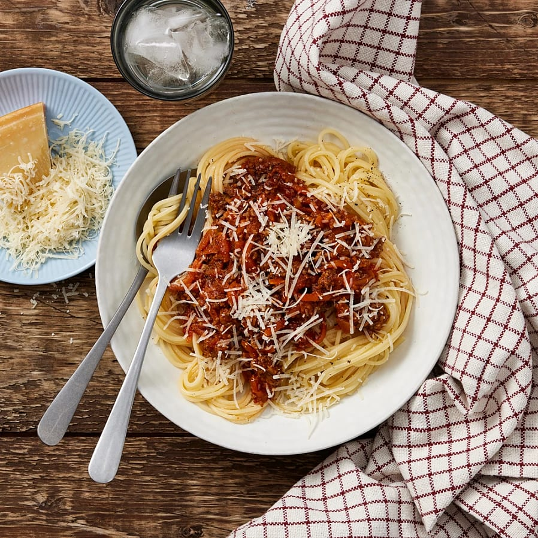

Spaghetti och Köttfärsås

Lägg i spaghettin i det kokande vattnet
Hetta upp en stor stekpanna med lite olivolja eller smör.
Bryn köttfärsen tills den får fin färg och lägg i den hackade löken och pressad vitlök, och fräs tills löken är mjuk.
Tillsätt tomatpuré och rör om. Häll i de krossade tomaterna och smula ner buljongtärningen
Krydda med oregano, basilika, salt och svartpeppar.
Låt såsen småputtra på låg värme i 10-15 minuter. Smaka av och tillsätt eventuellt en nypa salt
Toppa gärna med riven parmesanost och färsk basilika
Ingredienser
400 gram
Spaghetti
400 gram
Köttfärs
1 st
Lök
2 klyftor
Vitlök
1 burk (400 Gram)
Krossader tomater
2 msk
tomatpuré
1 msk
olivolja
1 Tärning
Grönsaksbuljong